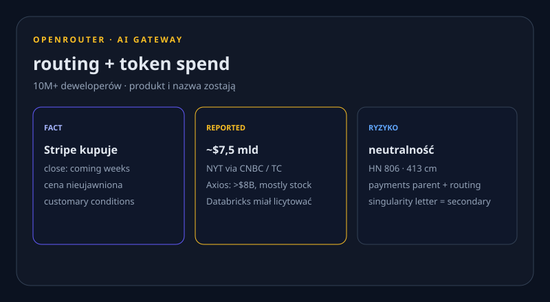

Stripe bierze OpenRouter. Claude Code 2.1.237. OpenAI ZDR. · 20.08.2026
Nowe vs 19.08: Stripe×OpenRouter (cena ~$7,5B = plotka), ZDR+PSP, Platform GA, Code 2.1.237, Gemini student, Meta Mac, Friar 2027, Marvell warrant. X: 402. Reddit: 403. Dziura ≠ cisza.

Stripe potwierdza OpenRouter. Cena ~$7,5B to plotka
NOWE Stripe i OpenRouter: gateway (400+ modeli, 80+ providerów, claim 10T+ tok/dzień) wchodzi do Stripe. Produkt i nazwa zostają; close „coming weeks”. Stripe nie podał ceny.
REPORTED NYT via CNBC/TC: ~$7,5B (~$1,5B dla founderów). Axios: „>$8B, mostly stock”. Neutralność routingu pod payments parentem = ryzyko produktu (HN 413 cm).


Produkty i modele
OpenAI ZDR + Private Safety Processing
NOWE 19.08: eligible API — brak retencji promptów po requeście. Preview PSP: automat wykrywa wzorce across sessions i emituje wąski sygnał, nie treść. White paper: wrzesień. Consumer ChatGPT bez zmian.
Claude Platform 19.08 GA
NOWE Z bety: Files API (1 TB/org, 500 rpm), Agent Skills, Admin user-mgmt GA. Managed Agents: allow/block domen na web_search/web_fetch; self-hosted sandbox memory; nowy session viewer.
Claude Code 2.1.237
NOWE Latest 20.08 00:54 UTC: styl Concise + fix prompt-cache na gateway / custom base URL. 2.1.236 (19.08 20:02 UTC) = feature drop. NIE 2.1.235
Gemini student hub + rok za darmo
NOWE US: rok AI Pro; poza US: AI Plus. Redeem do 31.12.2026, karta wymagana. Hub + Deep Research w Live: rollout do całej Gemini app, nie tylko student plan.
Meta AI na Macu
NOWE Screen-share, sugestie z ekranu, dictation; IG/FB, ads, Workspace. Nie przejmuje kontroli nad Macem — różnica vs desktop ChatGPT/Claude.
TAC / Daybreak Blue — glitch
NOWE Pięciu badaczy straciło Daybreak Blue (GPT-5.6 Sol, defensive). OpenAI: błąd, re-verify. Daybreak Red = wyższy tier. Nie mylić z pauzą Astra/RL (18.08).
Laby i research
MIT: attribution decay
NOWE Dai & Gifford (CSAIL): im większy zbiór, tym trudniej mapować output do jednego dzieła. Klin prawny vs Midjourney/NYT. Quote: „rethink what IP means.”
Sutton: synthetic data = błąd
NOWE Rich Sutton on-record: syntetyczne tokeny nie zastąpią experiential data. Oak Lab: trillion-param mind na ~20 W. FACT jako cytat, nie bench.
LFM2.5 QAD Q4_0
NOWE HF blog 19.08, autor = LiquidAI (nie model HF-org). QAD GGUF 230M–2.6B: claim ~97% odzysku BF16 vs zwykły Q4_0. Liczby = claim autora.
Biznes
Friar: IPO 2027
REPORTED CNBC, dwa źródła: Friar na all-hands 19.08 — „public company in 2027”, wcześniej jeśli biznes „inflects". S-1 od czerwca. Nie recyklinguj WSJ Q2.
Marvell × Google ~$12,2B
NOWE 8-K: Google może kupić do 58,97 mln MRVL po $206,58 do 2033. Vesting = transze $500M TPU-attach. Warrant, nie grant dziś.
Rillet $100M C @ $1B
NOWE ICONIQ lead; Sequoia, a16z. Trzecia runda w rok, >$200M łącznie. AI-native ERP / continuous close. Pitch: „accounting superintelligence".
Open-source / dev
Unsloth Dynamic 3.0 GGUFs
NOWE TREND HN 244. Qwen3.8-27B UD-3: claim >10% top-1% przy tym samym size; PTQ, nie QAT. Waterline local-Llama na tydzień.
Launch HN: OneCLI
NOWE YC S26, Apache-2.0: agent nigdy nie trzyma sekretów — placeholder w kontekście, gateway po policy. Izolowane VM, HITL. 74 pts.
Narzędzia
Clipto MCP + Origin — PH 19.08
NOWE Clipto MCP #2 336▲: agenty szukają lokalnych TB mediów. Origin by Cursor #3 271▲: nie wynalazek 20.08 (TC 18.08) — to dzień PH. Enterprise opt-out.
Frugal Tokens + Flock
NOWE Show HN Frugal Tokens (32 pts): explorer kosztów coding-agentów. WIRED 20.08 rano: Flock Safety OS Investigate — kod w rękach reporterów.
Gadżety
MemoMind One — Kickstarter
NOWE CROWDFUNDING Okulary AI bez kamery. ~$1,2M / 11 578% celu. Zamyka 27.08.2026. ~$399 vs $599. Nie shipping.
Rollme View — retail $99
NOWE 12MP, tłumaczenie, $99,99 w sklepie. SHIPPING / retail, nie KS. Tani zestaw z kamerą vs MemoMind bez kamery. VERSA = wczoraj — nie recyklinguj.
Sygnały X + Reddit + HN
X HOLE user-X połączony (ProductRootIO, id 523396609). Po get_users_me → 402 credits depleted. search_posts_all nigdy nie użyte. Bez scrapu Chrome. Dziura ≠ cisza.
REDDIT HOLE r/LocalLLaMA, r/ClaudeAI, r/OpenAI: 403. Nie wymyślamy wątków. Unsloth jako kandydat LocalLLaMA = inferencja, nie obserwacja.
HN 19.08: OpenRouter 806 · Unsloth 244 · OneCLI 74. 20.08 rano: Asana/Codex 28 (vendor claim). CS-4 / Linear / machine0 = wczoraj.
Co warto dziś sprawdzić
- Stripe×OpenRouter — deal FACT, cena plotka. Stripe · OR
- ZDR + PSP — preview, nie GA. OpenAI
- Platform GA + Code 2.1.237 (nie 2.1.235). RN · 237
- Gemini student + Meta Mac. student · Mac
- Friar 2027 + Marvell warrant. Friar · MRVL
- TAC + Unsloth 3.0 + OneCLI. TAC · UD3 · OneCLI
- MemoMind KS zamyka 27.08 — nie shipping. KS
3 tweets ready to post
https://stripe.com/newsroom/news/stripe-agrees-to-acquire-openrouter
https://openai.com/index/offering-zero-data-retention-for-frontier-models/
https://github.com/anthropics/claude-code/releases/tag/v2.1.237